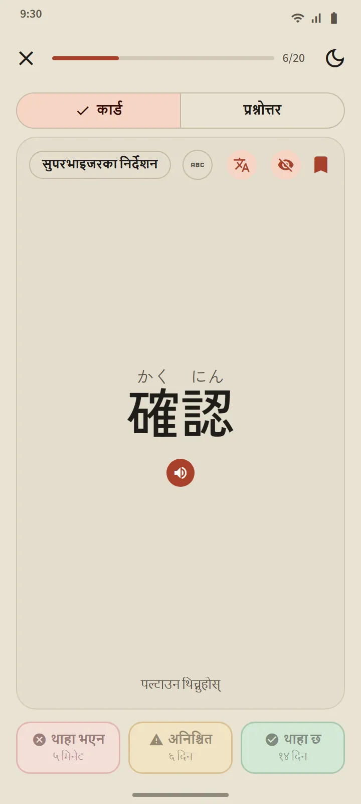
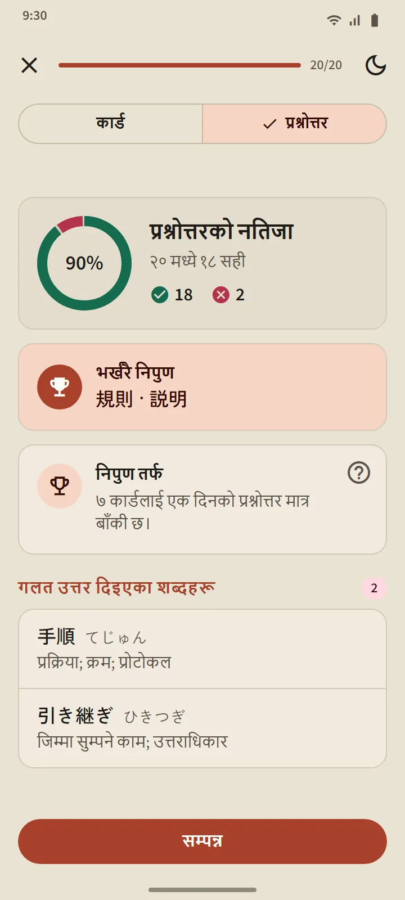
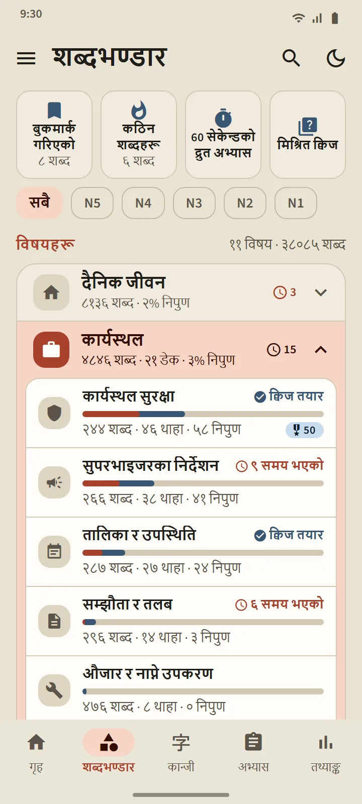
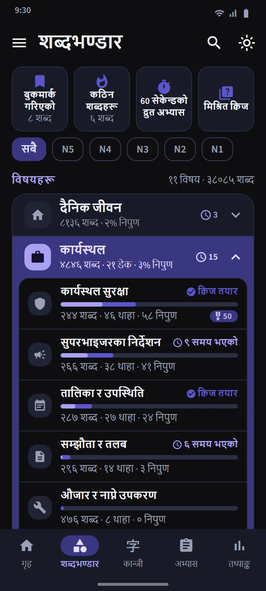
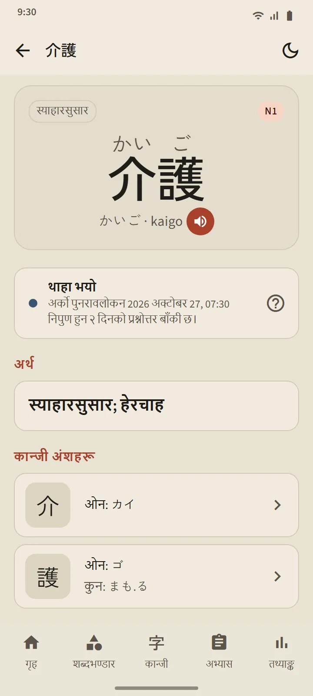

बिर्सन लाग्दा थाहा पाउने कार्ड
कार्डको अगाडि शब्द देखिन्छ (चाहनुभयो भने फुरिगानासहित)। ट्याप गरेर पल्टाउनुहोस्: पठन, रोमाजी, अर्थ र बनेका कान्जी, साथै उच्चारण सुन्ने बटन। त्यसपछि तीनवटा बटनमध्ये एउटाले आफूलाई मूल्याङ्कन गर्नुहोस्।
तालिका FSRS ले मिलाउँछ, जुन आधुनिक फ्ल्यासकार्ड एपहरूले प्रयोग गर्ने अन्तरालमा दोहोर्याउने एल्गोरिदम हो। हरेक बटनले शब्द कहिले फर्किन्छ भनेर देखाउँछ: केही मिनेट, दिन वा हप्तापछि। तपाईंले थाहा छ जति धेरै पटक छान्नुहुन्छ, अन्तराल उति लामो हुन्छ।
- थाहा भएन बटनले शब्दलाई जुनसुकै चरणबाट फेरि सिक्दै चरणमा फर्काउँछ।
- अनिश्चित बटनले यसको अन्तराल छोट्याउँछ।
- थाहा छ बटनले शब्दलाई थाहा भयो चरणमा लैजान्छ र अर्को पुनरावलोकन अझ टाढा धकेल्छ।


चार चरण, र निपुण हुन प्रमाणित गर्नुपर्छ
हरेक शब्द चार चरण चढ्छ: नयाँ, सिक्दै, थाहा भयो, निपुण। कार्डमा थाहा छ थिच्दा शब्द थाहा भयो सम्म मात्र पुग्छ। निपुण हुन तीन फरक दिन प्रश्नोत्तरमा सही जवाफ दिनुपर्छ। निपुण शब्दहरू म्याद आउँदा फेरि जाँचिइरहन्छन्, र गलत भए तल झर्छन्।
डेकको प्रश्नोत्तर त्यसका 20 शब्द थाहा भयो वा निपुण भएपछि खुल्छ (साना डेकहरू सबै शब्द थाहा भएपछि नै खुल्छन्)। प्रश्न दुवै दिशामा आउँछन्: शब्दबाट अर्थ, र अर्थबाट शब्द। अन्तमा नयाँ निपुण भएका शब्द, एक पाइला बाँकी रहेका शब्द, र गलत भएका शब्द देखिन्छन्।


विषयअनुसार पढ्नुहोस्, हरेक शब्दको प्रगति हेर्नुहोस्
शब्दभण्डार ट्याब 11 समूहमा बाँडिएको छ, र हरेक समूहमा साना डेक छन्। माथिको फिल्टरले सबै कुरा एउटा JLPT तहमा सीमित गर्छ। हरेक डेकको आफ्नै स्क्रिन छ: पूरा भएको प्रतिशतको घेरा, हरेक शब्दको अवस्थासहितको शब्द सूची, सिक्दै/थाहा भयो/निपुण फिल्टर, र पढ्नुहोस् तथा प्रश्नोत्तर बटन।
कार्यस्थल समूहमा जापानमा काम गर्न जाने उम्मेदवारका लागि 21 डेक छन्: कार्यस्थल सुरक्षा, सुपरभाइजरका निर्देशन, तालिका र उपस्थिति, सम्झौता र तलब, औजार र नाप्ने उपकरण, लजिस्टिक्स र भण्डारण, कार्यालय र कागजात, खाद्य उत्पादन, स्याहारसुसार, कारखाना र उत्पादन, औद्योगिक मेसिन, इलेक्ट्रोनिक्स र विद्युत, निर्माण, रेस्टुरेन्ट र भान्सा, कृषि, जहाज निर्माण, भवन सरसफाइ, मत्स्य उद्योग, अटोमोबाइल र मर्मत, उड्डयन र विमानस्थल, आतिथ्य सेवा। जापानमा जीवनका लागि यातायात, किनमेल र पैसा, घर र फर्निचरका डेक छन्, साथै सामाजिक र प्रशासन र शरीर र स्वास्थ्य समूह।
| समूह | डेक |
|---|---|
| दैनिक जीवन | 16 |
| कार्यस्थल | 21 |
| सामाजिक र प्रशासन | 8 |
| शरीर र स्वास्थ्य | 8 |
| स्वभाव र भावना | 8 |
| शब्दवर्ग | 5 |
| प्रविधि र सञ्चार माध्यम | 4 |
| प्रकृति र विज्ञान | 10 |
| शैक्षिक र मत | 8 |
| संस्कृति र धर्म | 4 |
| खेलकुद र खेलहरू | 3 |


विशेष डेक र छिटो अभ्यास
समूहको सूचीमाथि तीनवटा डेक छन् जसले सबै डेकबाट शब्द तान्छन्: बुकमार्क गरिएको (तपाईंले तारा लगाएका शब्द), कठिन शब्दहरू (कार्डमा बारम्बार बिर्सने वा प्रश्नोत्तरमा छुटाउने शब्दले आफैँ भरिन्छ), र 60 सेकेन्डको द्रुत अभ्यास (एक मिनेटमा अटाउने जति कार्ड)। चौथो खाना, मिश्रित क्विज, ले सबै डेकका थाहा भयो र निपुण शब्दलाई एकैपटक जाँच्छ।

38,085 शब्दको पकेट शब्दकोश
शीर्षपट्टीको खोज चिन्हले कान्जी, काना, रोमाजी वा अर्थबाट जुनसुकै शब्द भेट्टाउँछ। नतिजा कति मिल्छ भन्ने आधारमा क्रमबद्ध हुन्छन्, र रोमाजी हिज्जेको सहनशीलतासहित मिलाइन्छ: shinbun र shimbun, koohii र kōhī, arigato र arigatou सबैले एउटै शब्द भेट्टाउँछन्। हरेक शब्दको विवरण पृष्ठ छ: यसको चरण र अर्को पुनरावलोकन, अर्थ, पठनसहित बनेका कान्जी, र उच्चारण सुन्ने बटन।


तह र अर्थका भाषाहरू
शब्दका तह अनुमान हुन्: जापान फाउन्डेसनले आधिकारिक शब्दावली सूची प्रकाशित गर्दैन, त्यसैले पुरानो JLPT सूची र प्रयोगको आवृत्तिबाट मिलाइएको हो। छुट्टै “JFT” शब्द तह छैन: JFT-Basic ले N5 र N4 को जस्तै आधारभूत शब्दावली, साथै कार्यस्थलका शब्द जाँच्छ।
अर्थ 11 भाषामा पूर्ण छन्। खमेर र चिनियाँमा हरेक निःशुल्क शब्द समेटिएको छ; अहिलेसम्म अनुवाद नभएका शब्द अङ्ग्रेजीमा देखिन्छन्। अनुवादको भाषा सेटिङमा इन्टरफेसको भाषाभन्दा छुट्टै छान्न सकिन्छ।
| तह | शब्द | निःशुल्क |
|---|---|---|
| N5 | १,०३० | १,००७ |
| N4 | २,०४४ | १,५०५ |
| N3 | ११,२३० | ४,१०१ |
| N2 | ११,३०९ | २,२९१ |
| N1 | १२,४७२ | ५०२ |